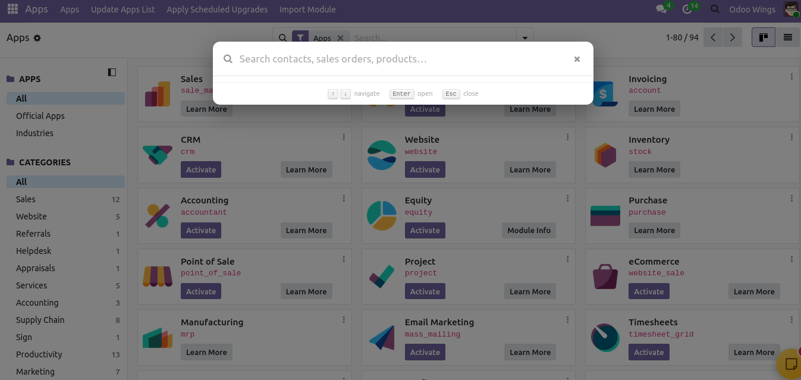
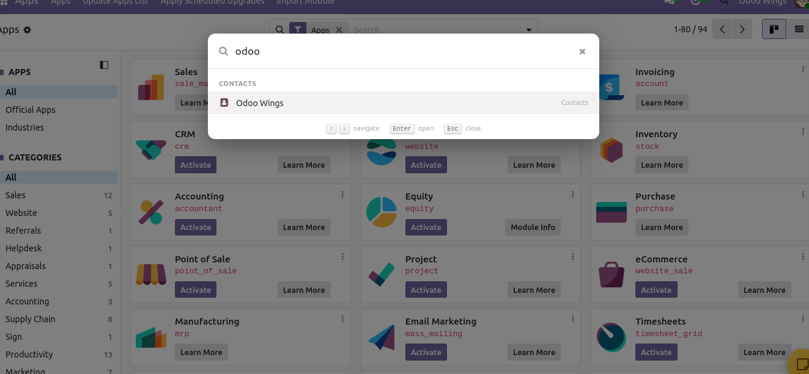
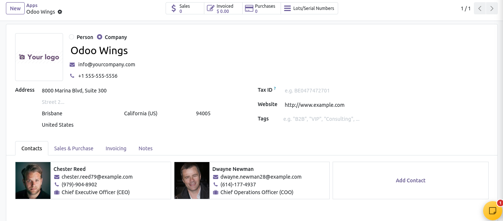

⌕ Search Across Apps One search surface for Contacts, Sales Orders, and Products. |
⌘ Instant Shortcut Open the global search overlay with Ctrl+K on Windows/Linux or Cmd+K on Mac. |
↕ Keyboard Navigation Use Arrow Up/Down to move through results and Enter to open the highlighted record. |
✓ Secure by Context Search runs as the logged-in user and respects model access rights and record rules. |
Global Search Spotlight adds a centered, Spotlight-style search overlay to the Odoo backend. Type a keyword and the module searches configured business records, groups matches by category, and lets you open the selected record directly from the results.
The module is designed for quick navigation: launch from the systray magnifying-glass icon or Ctrl+K / Cmd+K, type naturally, navigate with the keyboard, and press Enter to open a record. Search requests are performed in the current user's environment, so access rights and record rules remain in effect.
⌕ Searchable Models Contacts, Sales Orders, and Products are included by default when the corresponding models are available. |
⚡ Debounced Search The client waits briefly while you type before sending the search call, reducing unnecessary backend requests. |
↕ Grouped Results Results are grouped by business category and support mouse or keyboard selection. |
✓ Direct Record Opening Click a result or press Enter to redirect straight to the corresponding record form. |
🔎 Contacts Search Search contact names or email addresses within the current user's permissions. |
🛒 Sales Search Find Sales Orders by order name or customer name. |
📦 Product Search Find Products by name or internal reference (default code). |
⌘ Global Shortcut Ctrl+K / Cmd+K opens the search overlay from anywhere in the backend. |
⌨️ Keyboard Controls Arrow Up/Down, Enter, and Escape provide fast keyboard control. |
🔐 Access-Aware Results No sudo is used by the search engine; standard Odoo access rights and record rules apply. |
⚡ Debounced Typing Search calls are delayed until typing pauses for a smoother experience. |
🧭 Direct Navigation Open the selected record through the Odoo action service without extra list-view searching. |
🔄 Graceful Model Handling If Sales or Inventory-related models are not installed, the search skips them gracefully. |
|
 Press Ctrl+K / Cmd+K anywhere in the backend, or click the search icon in the systray, to open the overlay.  Results stream in as you type (debounced) and are grouped by category — Contacts, Sales, Products.  Selecting a result (click, or Enter) redirects straight to that record's form view. |
1 | Launch the overlay Click the systray search icon or press Ctrl+K / Cmd+K anywhere in the backend. |
2 | Type a keyword The input updates as you type and triggers a debounced search after a short pause. |
3 | Review grouped results Contacts, Sales, and Products are presented in category groups with the result name and category visible. |
4 | Select with mouse or keyboard Move with Arrow Up/Down, use hover or click to select, and press Enter to open the active record. |
5 | Open the record The selected item is opened through Odoo's action service directly in its form view. |
1 | Install the module Copy the module into your Odoo addons path, update the Apps list, and install Global Search Spotlight. |
2 | Open the backend The module registers a magnifying-glass search launcher in the backend systray. |
3 | Search with Ctrl+K / Cmd+K Start typing and use the result list to navigate to Contacts, Sales Orders, or Products available to the current user. |
Framework Odoo 19 Web Client OWL component, ORM service, action service and systray registry. |
Search Engine AbstractModel ORM Search Searches configured models through the current user's environment with per-model domains. |
Shortcut Ctrl+K / Cmd+K Global hotkey registered through Odoo's hotkey service. |
Security No sudo() Model access rights and record rules are evaluated in the logged-in user's environment. |
Models Contacts · Sales · Products res.partner, sale.order and product.template are configured by default. |
License LGPL-3 Module manifest license declaration. |